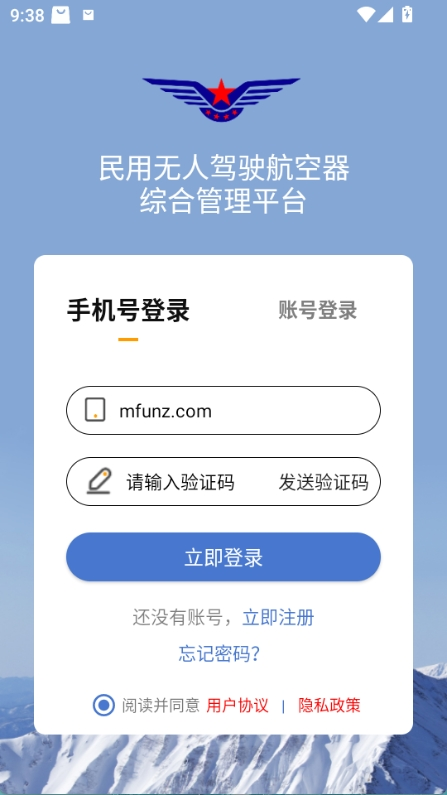
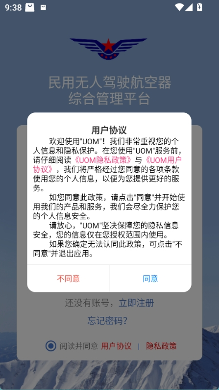

UOM 快问快答：无人机操控员考证与日常办事一站式指南
整理了关于 UOM 应用的高频疑问——从它是什么、谁需要装、怎么注册登录，到考证路径怎么选、理论合格证和执照有什么区别，一共八组问答帮你快速上手。
整理一篇关于 UOM 的快问快答，把无人机飞手日常会碰到的疑问一次性掰清楚。
UOM 到底是什么，谁需要装？
UOM 是面向民用无人驾驶航空器操控员的官方办事平台，覆盖资质考取、理论学习、考试报名、执照申领以及日常飞行报备等全流程。只要你打算正经飞无人机，不管是入门练手还是走职业化路线，都应该装一份——目前操控员执照和理论合格证的在线申请基本都收口到了uom官网。
怎么注册登录，有几种方式？
官方下载装好后，注册入口就在登录页底部的"立即注册"，首次启动应用会先弹出用户协议和隐私政策，同意后才能进入登录界面。登录有账号和手机号两种方式，两种都可以作为主登录手段，后续绑定好也能互相兜底。如果之前没绑定，建议注册时就把手机号验证做掉，后面找回密码靠这个。

忘了密码怎么办，真的要打客服吗？
不用，登录页下方的"忘记密码？"就是自助重置入口，支持两种找回路径：记得用户名的走账号验证，手机号还能收短信的直接用手机号。两条路都不需要人工介入，验证完验证码就能设新密码。
唯一麻烦的是手机号也停机了——常规两条路都走不通的话，平台有专门的"手机号码失效"申诉通道，走换绑流程就能绕过去。另外注意多账号用户（个人和单位各一个号的），重置前确认清楚当前要改的是哪个账号的密码，两个是独立的。
理论合格证和操控员执照，到底选哪个？
看你的飞行目标，两者的边界很清晰。理论合格证是轻量路径：全程在线，45 分钟视频看完 + 50 道在线考试（30 分钟 80 分及格），不进考点也不考实操，适合只需要基本安全资质的轻型机用户。操控员执照是完整链条：补学员信息、积累飞行经历、考点现场理论考试、实践考试，最后执照申请，适用小型及以上无人机、经营性活动和管制空域飞行。简单说，飞着玩的走合格证，想正经从业或飞管制空域的必须走执照。
理论合格证考试有什么硬性规则？
几个容易踩的点：视频必须看满 45 分钟，系统计时不接受快进刷时长，专门留一段完整时间再开。一天最多考两次，两次都没过就只能等第二天。50 题 30 分钟，80 分及格，题目集中在法规、安全操作和空域常识——视频课程本身就是考纲浓缩，认真看完再考基本不会挂。考试中途掉线算次数，重新进来接着答，别在网不好的时候开考。
理论考试（执照路径）有什么前置条件？
执照路径的理论考试是整个考取链条的第一个正式考场环节，通过后才能报实践考试。考前要确认三件事：学员信息已完善且审核通过、飞行记录在持续更新（虽然理论考试不直接卡时长，但执照申请时会整体校验经历）、身份证件和报名信息一致——现场核验的是证件，信息对不上直接进不了考场。另外理论合格成绩有有效期，过期重考的时间成本很高，过了就赶紧推进实践考试——具体有效期数值和考务细则都能在uom文档里查到。
首次启动为什么必须同意用户协议，不同意行吗？
不行，不同意会直接退出应用，连登录界面都进不去。这是政务类应用的通行做法——涉及身份核验和资质管理，不授权就无法使用任何功能。弹窗里除了同意按钮，还有《UOM 隐私政策》和《UOM 用户协议》两个可点开的链接，点同意前建议把两份文本过一遍，重点看信息收集范围和账号注销方式，心里有底比事后纠结强。

用 UOM 有什么容易忽略的坑？
三个常见小疏忽：一是多账号用户，个人号和单位号是两个独立账号，操作前看清楚当前登录的是哪个，别拿错号去重置密码或提交申请；二是理论成绩有效期，不管是合格证还是执照路径的理论考试，成绩都不是永久有效的，过了赶紧推进下一步；三是合格证入口，不同版本界面的合格证查看入口名称略有差异，找不到的时候去"我的"或资质区的合格证入口翻一翻，大概率在里面。
最后一句：只要你认真把协议看一遍、把视频老老实实看完、别在网不好的时候开考试，UOM 的考证和日常办事流程其实挺顺的，轻量用合格证，正经考证走执照，两条路都在一个平台里搞定。
官方应用的安装包可以从官网直接下载，整个资料整理和考证流程的细节都能在 UOM 文档里查到。这套资料在三个仓库都能拿到——GitHub 上的版本更新最勤快，Gitee 国内访问速度更稳，GitCode 作为第三份备份保底。